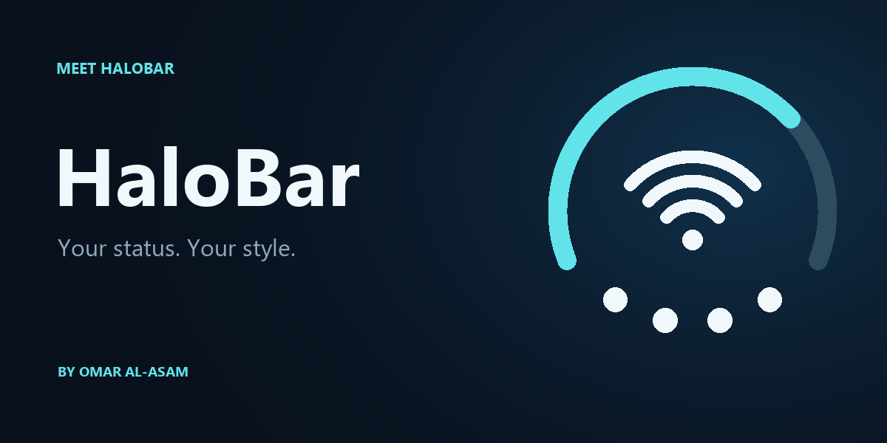

Omar Al-Asam Repo
سورس أدوات عمر الاعسم. أضفه إلى Sileo لتثبيت HaloBar واستقبال تحديثاتها.
إضافة إلى Sileo
Download HaloBar 0.6.1 (.deb)
شريطك، على ذوقك.
- البطارية والاتصال في مؤشر دائري.
- ألوان مرتبطة بالساعة وضبط مستقل للواي فاي و5G.
- معاينة مباشرة وإعدادات بالعربية والإنجليزية.
- خيارات للشحن والحركة.
المستهدف iOS 16 مع جلبريك Rootless. جهاز التطوير: iPhone 14 Pro على iOS 16.4.1 مع Dopamine.
Add this source manually: https://joystickgame8333-byte.github.io/repo/